Repaso de la Tanda 10S9
La batería de pruebas en 0 fallos de una pasada (tres veces seguidas y en 35 minutos), la descarga más ligera, las zonas de toque de 44 px y los retoques de la 10N12. Marca cada punto en tu teléfono cuando lo hayas comprobado (se guarda en este navegador).
0 · Antes de empezar ✅ Hecho — Prompt guardado tal cual (llegó entero, acaba en «reinicia el api-server»); nota de estado cada 30 minutos; sin motor ni migraciónMotor sin tocar (no hay cambios en shared/), así que no hace falta la muestra de 60 fechas. Sin migración. Dónde: No es de móvil. 0b · Respuestas a la 10R ✅ Hecho — Mandan siempre los datos de nuestra tabla, también para el administrador: los de la API de pruebas nunca los pisanInterruptor CIVITATIS_DATOS_API_MANDAN, apagado por defecto: apagado, la API de pruebas no cambia precio, nota, opiniones, duración, cancelación ni punto de encuentro, ni la ficha. Se enciende cuando haya producción. Dónde: No es de móvil (lo comprueba pruebaTanda10S9_A y 10O_api). ⚠️ A medias — Ostia Antica: 9,6/10, 294 opiniones, 3 h, cancelación gratis hasta 3 días antes, punto de encuentro Piazzale Ostiense (salida del metro Piramide), «comprobado: 2026-11-01»; precio el que tieneHecho en la lista y la ficha de Excursiones. La página del día 4 de Ostia es un ejemplo escrito a mano que sigue diciendo 6 h con vuelta a las 14:00 (la tabla dice 3 h): no la he tocado, dime si la cambio. Precio 52 € sin mirar en euros. Dónde: Excursiones desde Roma > Ostia Antica. 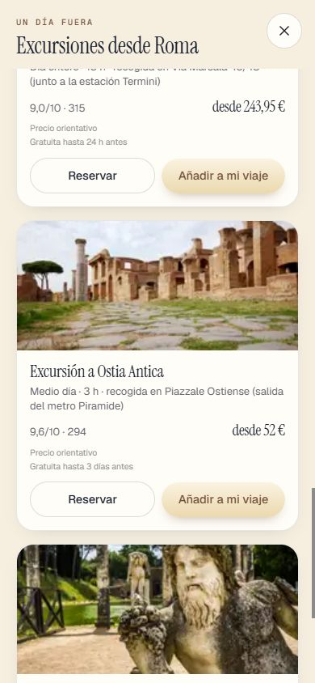
✅ Hecho — Nápoles y Pompeya en tren: No reembolsable, con el mismo aviso que Florencia en trenEl aviso sale por el dato (cancelación no_reembolsable) y no por el nombre, en la lista, los bloques del día, la página del día 4 y el explorador. Dónde: Excursiones desde Roma > Nápoles y Pompeya en tren. 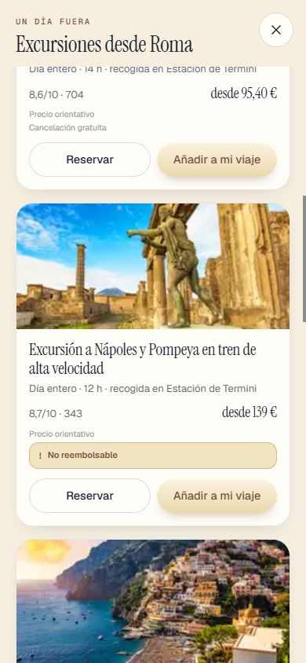
1 · Los bloques de RESERVAS, todos como «Llegada y vuelta» ✅ Hecho — Los tres bloques con la misma cabecera: icono grande, título de la misma letra y tamaño, estado debajo del título («Falta», «Listo», «0 de 9 reservadas») y flecha a la derecha; sustituye las pastillas de la 10S4Componente compartido CabeceraBloque (icono 48 px, título 27 px). Dónde: RESERVAS, con y sin pase. 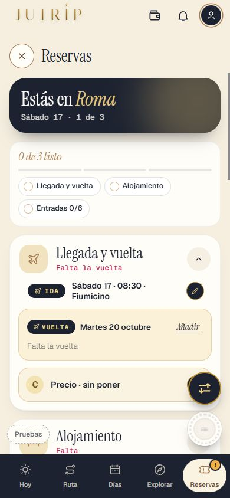
✅ Hecho — Un bloque siempre se puede cerrar, falte lo que falte; al entrar abierto si falta algo y cerrado si «Listo»Cambio de comportamiento: Alojamiento vacío y Entradas con alguna por reservar ahora salen abiertos al entrar (antes cerrados). Con todo «Listo» el alojamiento sale plegado. Dónde: RESERVAS, tocar la cabecera. 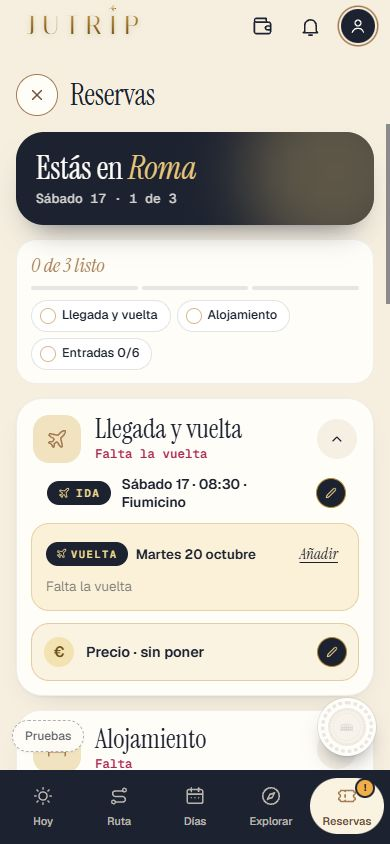
✅ Hecho — El de las excursiones: ¿bloque que se abre o solo la entrada a la lista?Respuesta: NO es un bloque que se abre. Es una lista de tarjetas (la excursión del día, las reservadas y «Excursiones desde Roma» con [Ver excursiones]). Se queda como está. Dónde: RESERVAS > Excursiones. 2 · La hoja del vuelo ✅ Hecho — Las pestañas, siempre «Ida» y «Vuelta», sin día ni hora, con ✓ si ya está puestaUn lado cuenta como puesto solo con hora elegida. Cambian los atributos de prueba (data-mi-vuelo-puesto en vez de data-mi-vuelo-resumen). Dónde: RESERVAS > Llegada y vuelta > lápiz del vuelo. 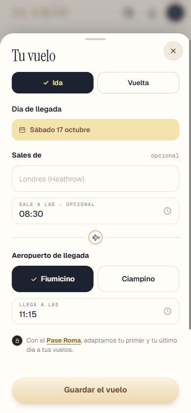
✅ Hecho — Regla nueva: una hora que pone la app es un ejemplo en gris hasta que el viajero la elige; si es obligatoria, [Guardar el vuelo] no se activa hasta que la elija; repasar todas las casillas de horaEl borrador empieza vacío y el ejemplo solo se pinta en gris. Aviso pequeño «Elige la hora de llegada de la ida». El invitado debe elegir las dos horas; el administrador puede guardar solo la ida. Casillas repasadas y cambiadas: hoja del vuelo, Datos del vuelo, Datos de la reserva del alojamiento, Datos de la excursión y la hora de la reserva a mano. Sin hora que cambiar: Datos de la entrada, Free Tour, gastos, Tu alojamiento. Sin tocar: el panel de desarrollo y TransportBookingModal (no se comprobó si se alcanza). Dónde: RESERVAS > Llegada y vuelta > lápiz del vuelo. 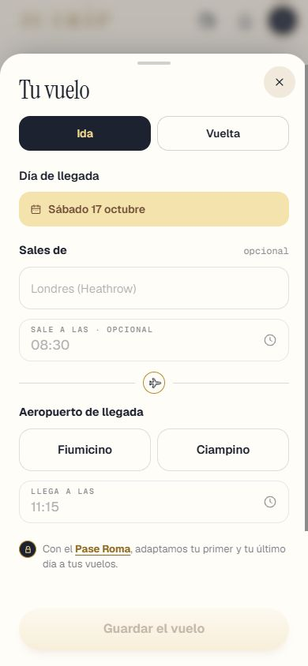
⚠️ A medias — La rueda: el ✓ guarda la hora que se ve, se haya movido o no (08:30 sin mover guarda 08:30); tocar fuera, igualEl ✓ guarda siempre lo que se ve. Decisión mía: si la casilla estaba vacía y no se movió nada, tocar fuera la deja vacía (no guarda el ejemplo), porque lo leí como «guarda lo elegido». Si quieres que ahí también guarde el ejemplo, es una línea. Dónde: RESERVAS > Llegada y vuelta > rueda de la hora. 3 · «Hemos ajustado tu ruta» sin pase ✅ Hecho — Sin pase, esa hoja no sale nunca; lo que solo informa se actualiza callado en DÍASLa causa: desde la 10S7b alCambiarElVuelo abría la hoja siempre. Ahora no la abre desde ningún camino. Sin pase solo se actualizan callados los planes de llegada y vuelta. Dónde: Cuenta sin pase: guardar el vuelo en RESERVAS. 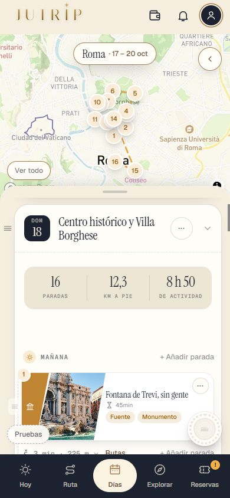
✅ Hecho — Con pase, tampoco antes de la pregunta; tras [Sí, adaptarlos] solo la franja con lo que de verdad ha cambiado; nunca «Hemos puesto…» si no se ha movidoCon pase sale solo «¿Adaptamos tu primer y tu último día…?» y, tras el Sí, la franja con [Deshacer] solo si algún día cambia. La prueba nueva no obliga a que salga franja (depende de que el viaje de prueba mueva algo); eso lo cubre pruebaTanda10S7b_U. Dónde: Con pase: guardar el vuelo en RESERVAS. 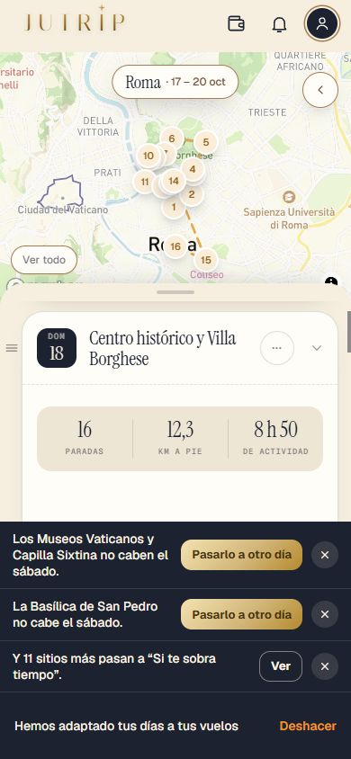
✅ Hecho — Repasar las frases de llegadaDia1.js y construirResumen que pueden salir y dóndeHojaResumenVuelo sigue montada en App.tsx pero ningún camino la abre (terminarRehacer está muerto: rehacerPorCambioDeVuelo devuelve siempre false). Si se reactiva, construirResumen filtra «pasa al día 2», «no cabe en tu viaje» y «lo tienes en Si te sobra tiempo» con planLlegadaVeraz, pero «El día N es tu llegada» y «Hemos puesto el Free Tour…» pasan sin filtro. Las frases de llegadaDia1.js (resumen[] y avisos[]) siguen en Route.planLlegada para la ficha de llegada y la campana; los avisos con campana:true salen por la campana. Dónde: No es de móvil. 4 · Un solo lápiz mientras no hay documento ✅ Hecho — Alojamiento: sin documento un solo lápiz, arriba, que abre «Tu alojamiento»; con documento (con pase) aparece el bloque de datos leídos con su lápiz, que abre «Datos de la reserva»«Documento» = hay código o localizador (alojamiento: reserva o localizador). Consecuencia que debes saber: con pase y sin documento, las horas de entrada y salida del hotel, el teléfono y el localizador no se pueden poner a mano hasta que haya documento. Dónde: RESERVAS > Alojamiento, con y sin documento. ⚠️ A medias — Lo mismo en las entradas y las excursionesEntradas: hecho y probado en pantalla. Excursiones: la misma lógica, comprobada en el código y por pruebaTanda10R_B (1 lápiz sin documento, y el de datos se abre con documento); sin captura. Dónde: RESERVAS > Entradas y Free Tour y Excursiones. 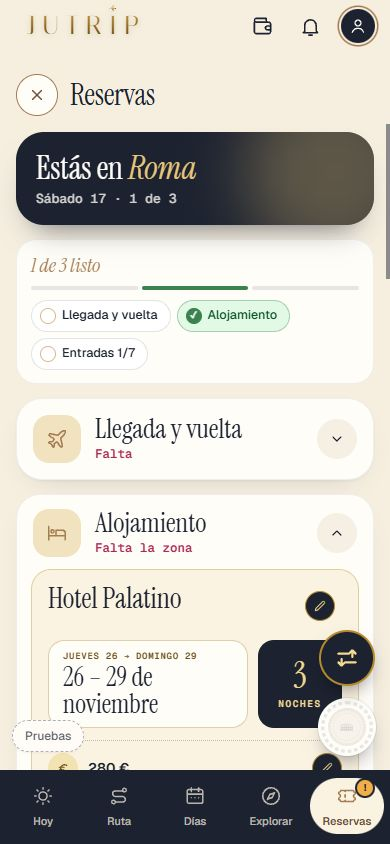
5 · Todas las ruedas de la hora, iguales ✅ Hecho — «Datos de la reserva» del alojamiento: Entrada y Salida con la rueda desde abajo, ✓ y papelera, ejemplos en gris «15:00» y «11:00», sin la hora de ahora al tocar SalidaTimeField se reescribió para abrir la misma HojaDeHora; ya no hay ningún <input type=time> del sistema fuera del panel de desarrollo (lo comprueba la prueba). Dónde: RESERVAS > Alojamiento > Datos de la reserva (con documento y pase). 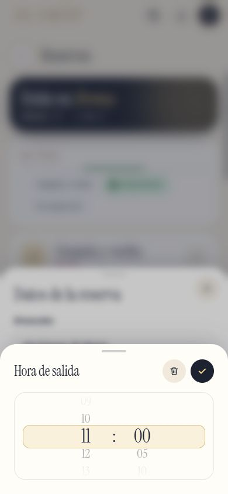
⚠️ A medias — Repasar todas (alojamiento, entradas, Free Tour, excursiones, gastos, Datos del vuelo, Datos de la entrada…) y decir cuáles se han cambiadoCambiadas: vuelo, Datos del vuelo, Datos de la reserva del alojamiento, Datos de la excursión y TimeField de la reserva a mano. NO cambiada: la rueda de la hoja «Añadir» (día y hora de una entrada, Free Tour o excursión): elige día y hora a la vez, parte de la hora más cercana a la llegada del sitio (o 9:00/10:00 en Free Tour) y tocarla toca el flujo de la 10O; queda como pendiente anotado en las reglas. Dónde: RESERVAS > Añadir una reserva > hora. 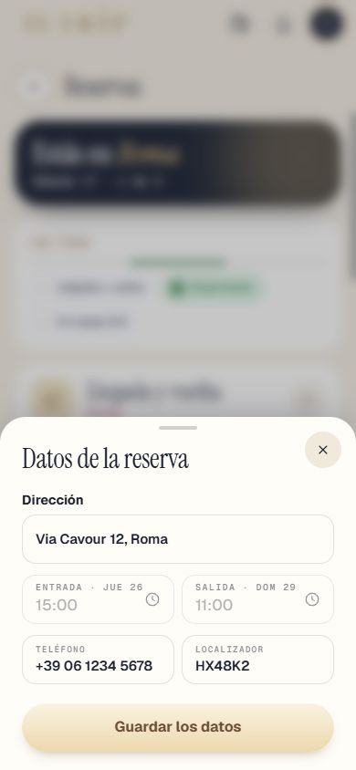
6 · Los botones flotantes ✅ Hecho — Los botones flotantes no tapan lo que se tocaPropuesta: se esconden al bajar el scroll y vuelven al subir un poco, al llegar arriba, al cambiar de pantalla y al abrir o cerrar una hoja. Es el mecanismo que ya existía (flotantes.ts), para los tres botones (logros, lápiz de propuesta, Reorganizar); solo mira zonas de 300 px o más con 80 px de recorrido. Medido en el navegador de pruebas, no en un iPhone real. Dónde: RESERVAS (Llegada y vuelta y Alojamiento abiertos) y DÍAS, bajando y subiendo. 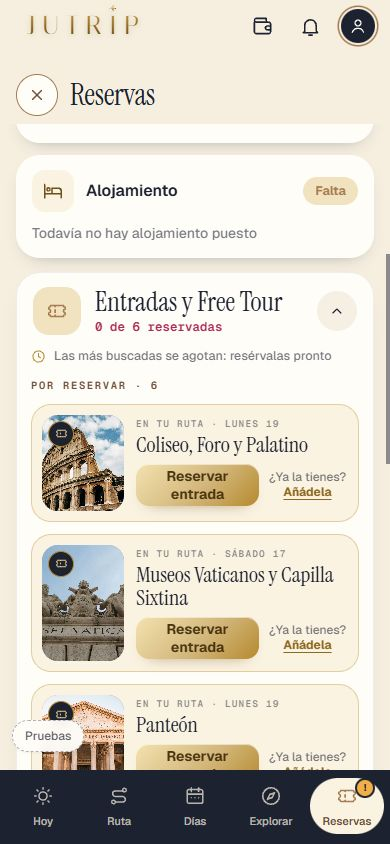
7 · La prueba ✅ Hecho — pruebaTanda10S9 (A a D) con los casos del prompt; capturas y REPASO_10S9.html; solo lo tocado más pruebaJutripVer el informe. Dónde: No es de móvil. Todas las capturas
10s9_cabeceras_gratis_01_faltan 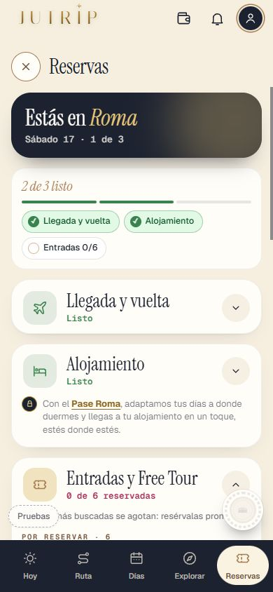
10s9_cabeceras_gratis_02_listos 10s9_cabeceras_pago_01_faltan 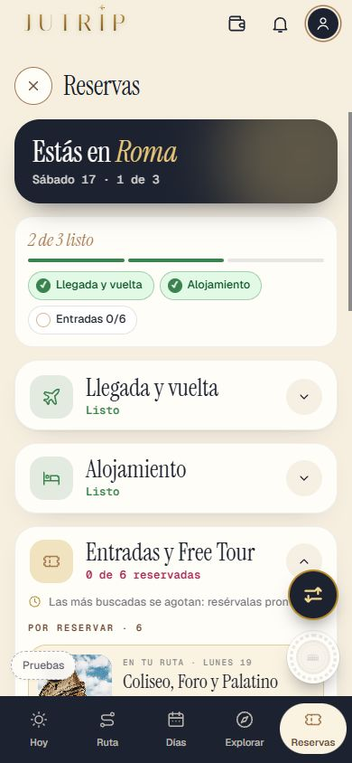
10s9_cabeceras_pago_02_listos 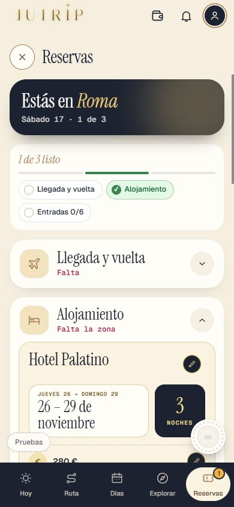
10s9_d_aloj_con_documento_completa_1 10s9_d_aloj_con_documento_gratis_1 10s9_d_aloj_sin_documento_completa_1 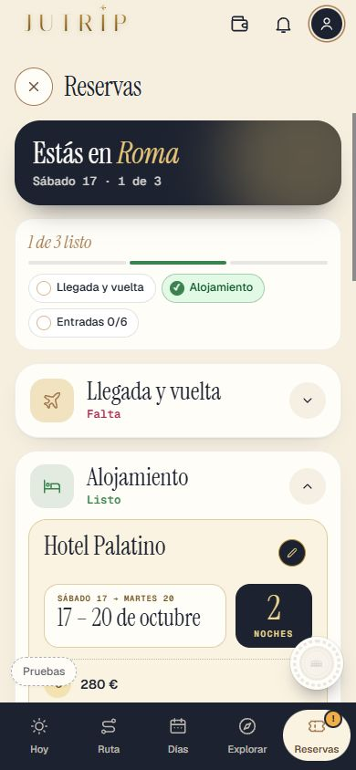
10s9_d_aloj_sin_documento_gratis_1 10s9_d_con_pase_franja_1 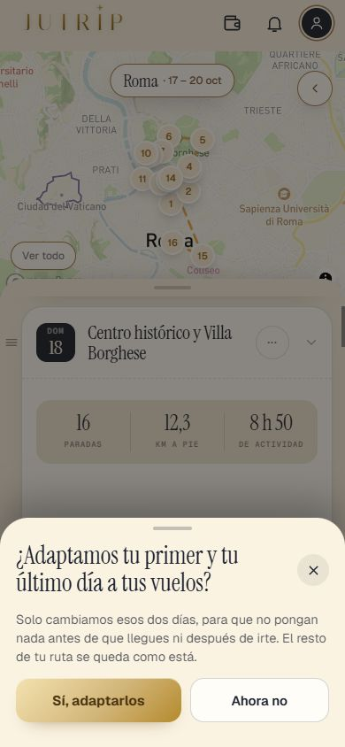
10s9_d_con_pase_pregunta_1 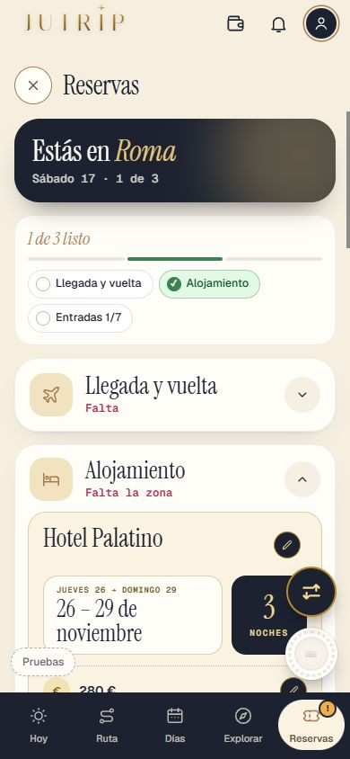
10s9_d_entrada_con_documento_completa_1 10s9_d_entrada_con_documento_gratis_1 10s9_d_entrada_sin_documento_completa_1 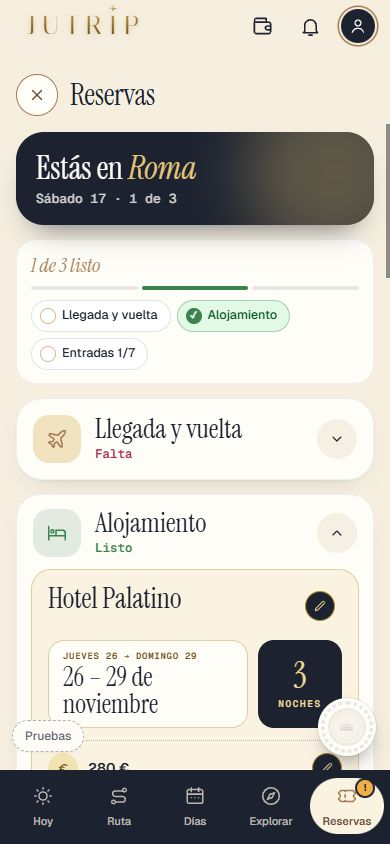
10s9_d_entrada_sin_documento_gratis_1 10s9_d_sin_pase_vuelo_1 10s9_excursiones_napoles_no_reembolsable 10s9_excursiones_ostia 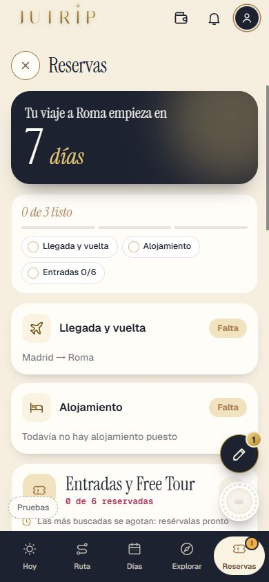
10s9_flotantes_bookings_1_arriba 10s9_flotantes_bookings_2_bajando 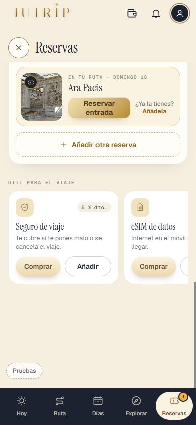
10s9_flotantes_bookings_3_final 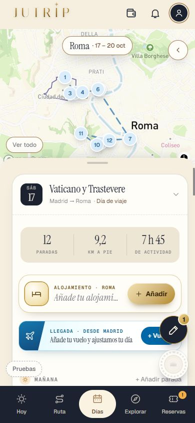
10s9_flotantes_days_1_arriba 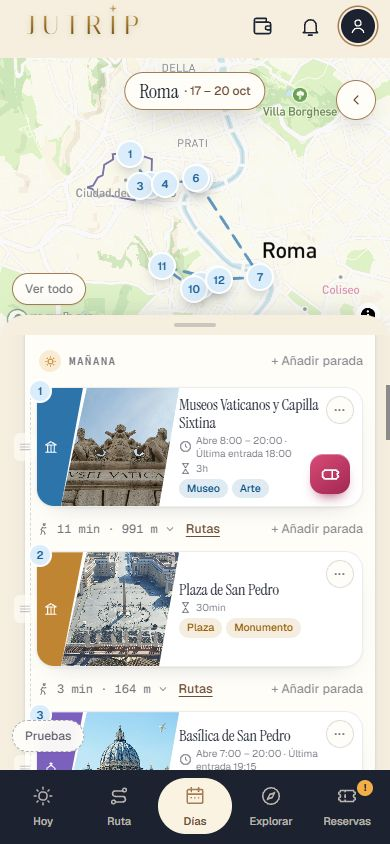
10s9_flotantes_days_2_bajando 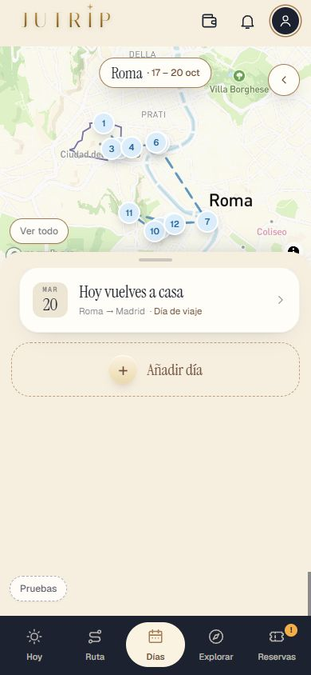
10s9_flotantes_days_3_final 10s9_horas_1_vuelo_ida_ejemplos 10s9_horas_2_vuelo_ida_puesta 10s9_horas_3_alojamiento_datos 10s9_horas_4_alojamiento_rueda